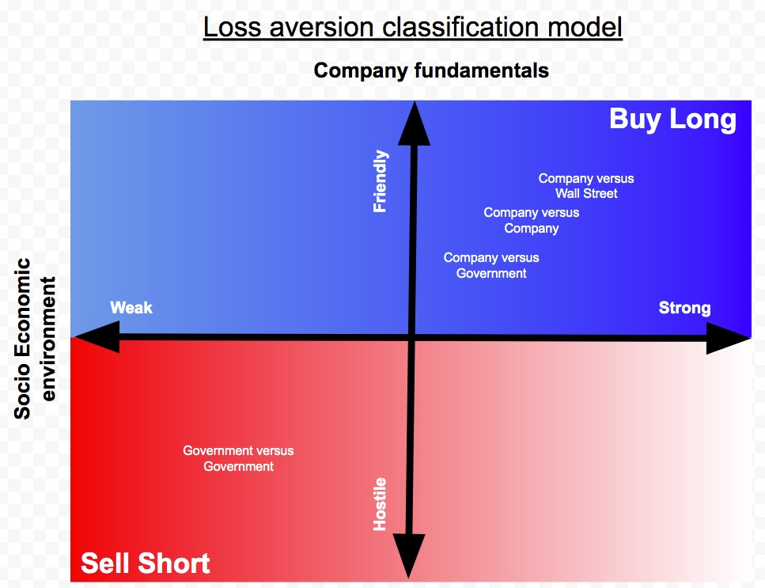

Trading algorithm

{kind=link}
- Long position strategy
exit at +5% or -2.5%
- Short position strategy
exit at +2.5% or -2.5%
Large Dip Scenarios
MOther nature versus company
- Pre-requisite: Disrupted company must be state protected with while exhibiting monopolistic characteristics. Disruptions must be attributed to natural disasters
- Trigger: Actual natural disaster occurrence or negative PR due to actions to avert natural disasters
2018 California wild forest fire attributed to cables operated by PCG
- [2019 deliberate black outs by PCG to avoid wild fire during adverse weather conditions](https://garyteh.com/2019/10/mother-nature-versus-city-public-utilities/)
- Pattern
trigger threshold 10% drop
- expected exit level 5%
GOVERNMENT versus Government
- Pre-requisite: Company's industry impacted by political event
- Action: Short position with exit at 2.5% capital gain
- Trigger:
Company explicit modifies earnings guidance based on macro political event
- 2018/2019 - US/China trade war
- 2014-2016 - Saudi Arabia/Iran/Russia/US oil crisis
- Pattern
Tracker reports more than 5 companies experiencing large dips.
- Examples
[2014 - 2016 Saudi Arabia oil glut](http://garyteh.com/2018/04/lessons-from-saudi-arabias-2014-2015-flooding-of-market/)
- 2019 May US/China Trade war (semi-conductors)
company versus Government
- Pre-requisite: Company has strong fundamentals
- Action: Long position with exit at 5% capital gain
- Trigger: Threat of potential regulation
No negative macro event
- Bug in software
- Accidents not directly related to them
- Pattern
trigger threshold 30-40% drop
- expected exit level 20-25%
- exit principal and level profit of 20% in position for risk free bonus
company versus Wall Street
- Pre-requisite: Company has strong fundamentals
- Action: Long position with exit at 5% capital gain
- Trigger:
No negative macro event
- company has grown significantly versus prior period
30% revenue growth YoY
- 30% earnings growth YoY
- company misses expectations of Wall Street
- Pattern
Trigger threshold 7% drop
- [Examples](http://garyteh.com/2018/07/loss-aversion-and-reversion-to-mean-earnings-missed-patterns/)
Spotify - May 3rd 2018
- Netflix - July 16th 2018
- Facebook - July 25th 2018
- Anti-Patterns
Actual asset impairment due to poor processes
[KHC - Feb 22nd 2019 USD1.5B good will write off ](https://www.marketwatch.com/story/why-the-154-billion-kraft-heinz-brand-write-down-was-unusual-2019-02-22)
- Distribution disruption
[STMP - Feb 21st 2019 discontinued partnership with USPS](https://www.cnbc.com/2019/02/21/stampscom-crashes-nearly-50percent-after-discontinuing-partnership-with-usps.html)
- Weakening demand due to market saturation
[INTC - Apr 25th 2019 - cut in 2019 guidance](https://seekingalpha.com/news/3454577-intel-minus-6-percent-cut-2019-guidance)
company versus company
- It is important to understand the underlying market structure to figure out if the new entrant will have significant long term impact on existing player in the market. Areas to consider for analysis (from Micheal Porter's 5 forces model)
No negative macro event
- disruption of existing distribution channels
- market segment differentiation
- customer lock in cost
- Warning don't do it if you don't understand the dynamic clearly
- Examples:
[M1 versus MyRepublic](http://garyteh.com/2018/05/m1-versus-myrepublic/)
- [Match versus Facebook](http://garyteh.com/?p=2137&preview=true)
- [MongoDB versus Amazon](http://garyteh.com/2019/02/mongodb-versus-amazon/)
General restrictions
- Figure out what the macro economic trend is.
- know clearly the exit prices before entering into position
don't be greedy
- helps guard inability to execute caused by [procrastination](http://garyteh.com/2018/06/book-summary-predictably-irrational/)
- Long positions: strictly trade only on [loss aversion and recovery to mean pattern](http://garyteh.com/2018/01/summary-of-learnings-into-the-subject-of-mindfulness/) in companies with strong fundamentals
- Short positions: strictly trade only on companies within industry directly impacted by political event
Portfolio Allocation
- Application of [rule of 7 +/-2](https://en.m.wikipedia.org/wiki/The_Magical_Number_Seven,_Plus_or_Minus_Two)
hold no more than 9 open positions at any time
- [Micheal Porter's 5 forces](https://en.wikipedia.org/wiki/Porter%27s_five_forces_analysis)
- [Kelly model:](https://en.m.wikipedia.org/wiki/Kelly_criterion) determine percentage of fund allocated to position
Equation: ( (expected win amount * probability of win ) - (probability of lose) / ( expected win amount )
- Proposed portfolio allocation levels for each large dip occurrence
5%
- 10%
- 25%
- 50% - large dip + 5 positive Micheal porter's 5 forces check offs
Expected value calculation
- A3MG = average maximum gains during entire 3 month period for all large dips
- A3MD = average maximum drawdown during entire 3 month period for all larges
- PG = probability of successful exit
- AVW = average wait time in days before successful exit
- Daily expected value of holding a position = (A3MG X PG + A3MD X (1-PG) ) / AVW
Execution Time Line
Short term: loss aversion
- 1-2 weeks time horizon
[population gets fatigue of adrenaline rush triggered off by news websites](https://garyteh.com/2019/03/hypothesis-on-timing-entry-position-into-loss-aversion/)
- Magic number 5: social proofing threshold beyond which 100% conversion occurs within population
in this case, we watch for coverage of bad news by at least 5 major news network
- Capitalize misalignment of stimulus/news’s negative impact with business model fundamental
Company versus Government
- Company versus Wall Street
- Company versus Company - no longer term impact
- Be very wary not to take long positions when conflict is between
Government versus Government where tactics directly impact
- Company versus Company - with long term impact
- Don’t be too eager to jump in too early
Ok to wait till the coast is clear
- Ok to make less on the rebound
- if entry was done too early exit at 2.5% capital losses
Johnson: Much easier to buy at a cheaper price later than to ride it all the way down and then back up. Latter requires a lot of crowd confidence which is not common.
a 20% down is a 25% up
- Dan Kwon: Don't catch a falling knife
- Don't double down capital on a bad decision
lesson from bad trade with BreitBurn in 2015
- Exit strategy
long positions: at 5% capital gain
- short positions: at 2.5% capital gain
- Reasons
save yourself from unnecessary mental anguish by running various what if scenarios for not going along with the rest of the ride
- a good gauge is when information parity has been achieved between main street and wall street
Main detractors of ability to stick to strategy during execution phase
- Inability of manage symptoms of craving - greed
- Inability of manage symptoms of aversion - fear
Long term: lessons from Berkshire Hathaway
- Warren Buffet:
When management with good reputation meets industry with bad reputation, its the reputation of the latter that remains intact
- A rising tide raises all boats, it’s only when the tide goes down when u know who is not wearing pants
- When two companies make the same returns, the one that needs borrow less is the more capital efficient one
- Charlie Munger
Don't just do something, stand there
Warren Buffet Portfolio Strategy - Kelly Model
- Expect to utilize a long time horizon when using the Kelly model
- don't use leverage as it will force u out of a position when price tanks
- don't over bet when using the Kelly Model - penalties of over betting is much worst than under betting
- holding more than 15 positions is suboptimal
- study models in multiple domains which will help triangulate probability better
Models from field of Psychology
- Models from economics
- Models from Physics
- read widely. It’s cheaper than making own mistakes
- stick to domains you are very familiar with and have a decisive advantage versus the average investors - even tech which is becoming a bigger sector over time
Advice from Johnson on trading
- Remember clearly the outcome you were expecting when you enter a position
- Don’t be greedy and expect to ride all the way to the top to levels beyond your expectation. The fall usually occurs beyond that level.
- Be conservative and hop off just slightly before your expectations are met
- changing strategy (self-narrated story) in-flight makes it hard to measure the actual effectiveness of the strategy over prolonged periods of time
- Thinking that a strategy is perfect and can be repeatedly applied without micro-calibrations and occasional drastic changes assumes environment holds constant. That is wishful thinking.
Advice from Jake on trading
- Entry at a 52 week low level is ideal during a scare
- Historical context based analysis is really useful.
PCG was trading at USD7 during bankruptcy proceedings back in 2001 and was trading at the same levels period prior to bankruptcy proceedings in Jan 2019
Related Case Studies
- Government versus Company
[Equifax (September 2017) - mega silo data breach](http://garyteh.com/2018/03/data-breach-case-studies-equifax/)
- [Facebook (March 2018 ) - mega silo data breaches](http://garyteh.com/2018/04/data-breach-case-study-facebook-march-2018/)
- [Uber and Tesla (March 2018) - self driving car casualties](http://garyteh.com/2018/04/tesla-self-driving-cars-casualty-incident-march-2018/)
- Wall Street versus Company
[Spotify 20180502 - missed earnings expectations ](http://garyteh.com/2018/05/spotify-earnings-miss-20180502/)
- [Linkedin 20160216 -missed earnings expectations ](http://garyteh.com/2018/05/linkedin-missing-earnings-expectations-for-4th-straight-quarter/)
- Government versus Government
[Saudi Arabia's 2014/2015 flooding of oil market](http://garyteh.com/2018/04/lessons-from-saudi-arabias-2014-2015-flooding-of-market/)
- [Other crisis of interest](http://garyteh.com/2018/04/crisis-to-study/)
Useful frameworks for dissecting companies
[gallery ids="2286,2288,2289"]
- [#1 Micheal Porter's 5 forces](https://en.wikipedia.org/wiki/Porter%27s_five_forces_analysis)
- [#2 Ansoff Matrix - for analyzing new product launches](https://en.wikipedia.org/wiki/Ansoff_Matrix)
- [#3 BCG Matrix - for analyzing existing company portfolio](https://en.wikipedia.org/wiki/Growth%E2%80%93share_matrix)
Useful resources worthy of reference
- *[The psychology of money](http://www.collaborativefund.com/blog/the-psychology-of-money/)*
- [*Trust me I am lying*](https://garyteh.com/2019/02/key-take-aways-from-trust-me-i-am-lying/), Ryan Holiday
- [*Timing entry position for loss aversion scenarios*](https://garyteh.com/2019/03/hypothesis-on-timing-entry-position-into-loss-aversion/), Gary Teh
- [*Government versus Government hedging methodology*](https://garyteh.com/2019/08/macro-economic-trend/), Gary Teh
- [What do the best investors do that the rest don't](https://behavioralvalueinvestor.com/blog/2017/8/27/what-do-the-best-investors-do-that-the-rest-dont)
- [Probability Theory: Expected value](https://en.wikipedia.org/wiki/Expected_value)
- [*Portfolio allocation within a country*, Gary Teh](https://garyteh.com/2019/10/thoughts-of-various-asset-class-type-and-their-usage/)
- [*Constraints on world GDP levels*, Gary Teh](https://garyteh.com/2019/10/constrains-on-world-gdp-levels/)